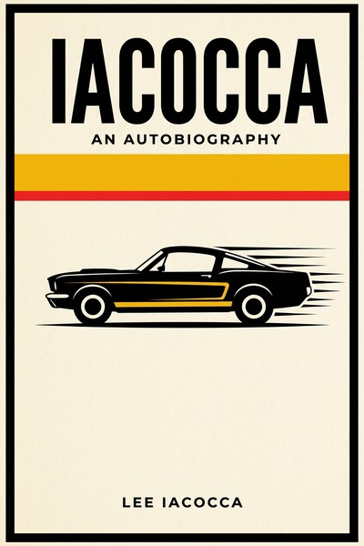

Library › History
Iacocca: An Autobiography — Summary & Key Lessons

The son of Italian immigrants who sold the Mustang, got fired by Henry Ford II, and dragged Chrysler back from the dead.
📖 OPEN THE FULL INTERACTIVE BREAKDOWN →🌐 Read it in Hindi, Hinglish, Gujarati, Tamil & 22 more languages — free, with audio.
💡 The Big Idea
Iacocca's life splits into two acts. Act one, Ford: he rose through sales (the '56 for '56 financing campaign), proved himself a product man (the 1964 Mustang, built from leftover Falcon parts, priced for youth, a sensation), then was fired by Henry Ford II in 1978 despite record profits, a personal and political annihilation he recounts with rare candor. Act two, Chrysler: he arrived to a near-dead company, negotiated $1.5 billion in federal loan guarantees (a firestorm of criticism), froze his own salary at a dollar, negotiated givebacks from unions, killed dead weight, bet on economical cars (K-cars) and the minivan (a concept Ford had declined), and repaid the loans early. The book is equal parts product philosophy (give the people what they want at a price they can afford), survival politics and a case for industrial patriotism.
🧠 The 8 Key Lessons
Lesson 1: Product Sense Is Betting on the Customer You Can Name
The Mustang
The Mustang succeeded because Iacocca could describe its buyer precisely (young, budget-conscious, hungry for style that giant cars offered at weights and prices they didn't) and the product was engineered to that person (Falcon underpinnings, sporty body, aggressive pricing). Product genius is less inspiration than a named customer plus ruthless cost discipline. If you cannot name and price your buyer, you have a concept, not a product.
📖 Example: Built on existing Falcon components to slash cost and risk, the 1964 Mustang sold over 400,000 units in its first year because it delivered style at a working person's price, exactly as the brief promised. Read the full example →
⚡ Do this: Write one paragraph describing your product's buyer so specifically it feels like a person you know. Then cut one cost that doesn't serve that person and add one feature that does.
Lesson 2: Power Fights You Even When You're Winning
Fired at the Top
Iacocca ran Ford's most profitable division and was still fired, because Henry Ford II's insecurity and court politics outweighed performance. The brutal lesson: corporate empires are political systems; results are necessary but not sufficient, and any executive's position can evaporate on a patron's mood. Build external optionality (reputation, network, savings) even at the top, especially at the top.
📖 Example: The firing (delivered in a bare office, without ceremony despite decades of service) became his origin story; the network and reputation he'd built outside Ford is what made Chrysler's call possible. Read the full example →
⚡ Do this: Even if employed and succeeding, update your external record quarterly: your network, your savings runway, your story outside the company. Loyalty is mutual, not guaranteed.
Lesson 3: Ask for Help Before the Obituary Is Written
The Loan Guarantee
Chrysler's survival required a public humiliation: federal loan guarantees, argued for on national-interest grounds (jobs, suppliers, defense suppliers), with brutal terms attached (wage freezes, creditor haircuts, a government oversight board). The lesson: rescuing a company often needs outside capital on terms you'd never accept in health; take the terms early enough that the company is worth rescuing, and frame the ask in the rescuer's interest, not yours.
📖 Example: The $1.5 billion guarantee (1979-80) came with concessions from unions, banks and suppliers, all negotiated because the alternative was liquidation; Chrysler repaid early, in 1983, seven years ahead of schedule. Read the full example →
⚡ Do this: If your company is slipping toward insolvency, list who (besides banks) has a national or ecosystem interest in your survival, and what they'd demand. Ask BEFORE the death spiral makes you worthless to save.
Lesson 4: Leadership Credibility Is Measured in Your Own Paycheck
The One-Dollar Salary
Iacocca took a dollar salary and froze executive pay before asking unions for givebacks; the sacrifice (symbolic but visible) is what made painful concessions negotiable. Credibility in a turnaround is bought with shared pain, ordered correctly: leaders first, then management, then labor. The sequencing is the strategy.
📖 Example: Union leaders accepted wage concessions citing the executive cuts publicly; the one-dollar story did more negotiating than any memo. Read the full example →
⚡ Do this: If you must ask your team for sacrifice, draw up the leaders-first sacrifice schedule and publish it before the ask. Sequence is credibility.
Lesson 5: Say No to Dead Weight Fast, in Public
The Chrysler Purge
Iacocca cut management layers, sold divisions (including profitable ones funding nothing strategic) and fired executives whose loyalty was to the old company. Turnarounds die by politeness: every month of delay in cutting the doomed is a month stolen from the salvageable. The discipline: a turnaround needs visible, fair, fast cuts, with the criteria explained to everyone left.
📖 Example: Killing pet projects and brands (and the executives attached) shocked the culture into focusing, while transparent criteria kept the survivors aligned instead of terrified. Read the full example →
⚡ Do this: List your bottom 20 percent (products, projects, vendors) by strategic value today. Set a 60-day date to kill or fix each, and announce the criteria company-wide now.
Lesson 6: Steal the Rejected Idea from the Giant
The Minivan Ford Didn't Want
The minivan concept (front-wheel drive family van, car-like handling, garage height) was declined inside Ford; at Chrysler it became the decade's defining product and the company's savior. Giants reject ideas for structural reasons (cannibalization fear, platform politics), not because ideas are bad. The discipline: watch what giants decline and why; the reasons are usually their constraints, not the market's.
📖 Example: Chrysler's minivans (1983) created and owned a category for a generation, funded the debt repayment, and validated every rejected pitch meeting at the rival across town. Read the full example →
⚡ Do this: Talk to people who left big competitors: collect the ideas their companies rejected and the reasons why. The rejection reasons are a map of your opportunity set.
Lesson 7: Sell the Company's Soul in Plain Language
If You Can Find a Better Car, Buy It
Iacocca became the brand: direct TV ads, plain promises ('if you can find a better car, buy it'), warranties that dared comparison. In a trust collapse (bankrupt company), the CEO's personal credibility had to substitute for the brand's, and plain talk was the only currency left. The lesson: in low-trust moments, drop the agency voice entirely; the founder's plain, checkable promise outperforms all polish.
📖 Example: The famous line worked because it was falsifiable: customers could literally go check, which is exactly what made it believable after years of car-ad exaggeration. Read the full example →
⚡ Do this: Rewrite your main marketing promise as a falsifiable claim (something a customer could check and call you on). Put it everywhere, and make sure it stays true.
Lesson 8: Patriotism Is a Business Argument When Jobs Are the Product
Congress and the Country
The loan-guarantee fight was won by reframing: Chrysler's bankruptcy wasn't a shareholder problem but a national one (hundreds of thousands of jobs, supplier ecosystems, defense manufacturing). The persuasion genius: translate corporate survival into the audience's scoreboard. For any founder seeking public support (regulators, governments, communities), the frame that wins is their stakes, your competence.
📖 Example: Testimony citing suppliers and small-town payrolls flipped skeptical legislators; the guarantee passed, and its early repayment converted the argument into legend. Read the full example →
⚡ Do this: For your next big external ask (funding, regulatory relief, partnerships), write the one-page version in the other side's scoreboard: their jobs, their voters, their metrics.
✅ 5-Step Action Plan
- Describe your buyer in one named paragraph and cut what doesn't serve them.
- Build external optionality (network, runway, story) even at the top of your game.
- Sequence every sacrifice ask: leaders first, published, then everyone else.
- Set a 60-day kill-or-fix date for your bottom 20 percent and announce criteria.
- Rewrite your core promise as a falsifiable claim customers can check.
⚠️ When This Doesn't Work
This is Iacocca's own account, written at his 1984 peak: the Ford years cast Henry Ford II as villain without Henry's side, the Chrysler rescue's long tail (later decades of Chrysler decline, the K-car era's quality complaints) is beyond its scope, and the patriot framing served both the company and the man. Treat product chapters as masterclass and institutional chapters as one side of a very good story.
💀 The Graveyard Proves It
🚗 Ford Edsel — The $250M Car Nobody Asked For. Burn: $250M (≈ $2.5B today). Read the full case study →
💬 Best Quotes from Iacocca: An Autobiography
- “Motivation is everything. You can do the work of two people, but you can't be two people.”
- “In the end, all business operations can be reduced to three words: people, product, and profits.”
- “The trick is to make sure you don't die waiting for prosperity to come.”
Interactive version: mark lessons as read, listen in your language, share quote cards.